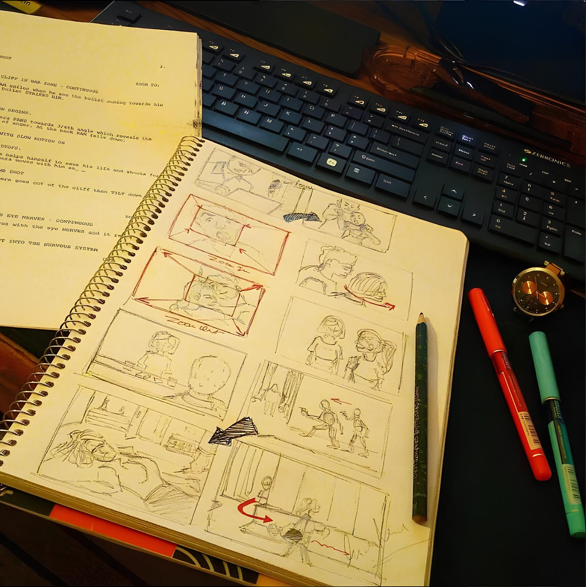

Что такое Режиссура ?
Кинорежиссура — это искусство и процесс создания кинофильмов, который включает в себя разработку визуального и эмоционального повествования с помощью видеоизображения и звука. Режиссура объединяет все аспекты кино, такие как сценарий, актёрская игра, операторская работа, монтаж, звук и музыка, чтобы выразить замысел и идеи автора фильма.
Режиссёр является основным творческим руководителем проекта и отвечает за то, чтобы фильм передавал определённые эмоции, мысли и историю. Он или она принимает ключевые решения на каждом этапе производства, начиная с разработки концепции, выбора актёров, подбора локаций и заканчивая съёмками, монтажом и окончательной обработкой фильма. Подробнее
9 ноября 2024
#Мыслиоважном
"Каждое большое дело начинается с маленького шага. Не бойся трудностей на пути – именно они делают нас сильнее и мудрее. Если ты идешь к своей цели каждый день, не жалея усилий, то результат обязательно придет. Помни, что терпение и настойчивость сильнее природного таланта – амбиции и труд способны преодолеть любые преграды. Сомнения пройдут, но останется то, что ты создал."
9 ноября 2024
Вдохновение и творческий путь
Один из самых важных уроков, которые я усвоил: кино — это не просто работа, это искусство жизни, отражённое через камеру. Каждая сцена — это не просто набор кадров, это история, эмоции, которые должны быть видны и ощутимы зрителю. Именно это и является моей главной целью — передать.
Сегодня я продолжаю учиться и развиваться, но самое главное — я всё больше осознаю, что кино, как и жизнь, — это непрерывный процесс. Каждый новый проект, каждый новый кадр — это шаг на пути к чему-то большему. Если ты следуешь за своей мечтой, то даже в самые трудные моменты ты всегда найдёшь способ двигаться дальше.
9 ноября 2024
Первый шаг в кино: начни с того, что у тебя есть.
Если у вас нет профессиональной камеры, это совершенно не должно останавливать вас на пути к созданию кино. Сегодня почти у каждого есть телефон с камерой, и этого уже достаточно, чтобы начать снимать. Важна не техника, а ваше видение, идеи и способность улавливать моменты. Даже если вам кажется, что кадры выглядят «любительскими» или недостаточно проработанными, это абсолютно нормально. Никто не становится мастером с первой попытки.
Не бойтесь снимать на улице или в людных местах — да, люди могут смотреть, но со временем вы привыкнете, и это перестанет вас смущать. Каждый неудачный кадр, каждое несовершенное видео — это опыт и шаг вперёд. Со временем вы научитесь лучше понимать композицию, свет, монтаж, и каждая новая работа будет приближать вас к тому качеству, о котором вы мечтаете.
Снимайте то, что вдохновляет, что затрагивает, что интересно именно вам.
Камера — это инструмент, и важнее всего то, что стоит за ней: ваши мысли, чувства и желание делиться своим видением с миром. И если не останавливаться, каждый шаг приближает вас к той цели, ради которой вы начали.
10 ноября 2024
Почему раскадровка так важна? упрощаем процесс съёмок.
Всегда работайте с раскадровками! Создавая раскадровки для каждого ключевого момента вашего сценария, вы значительно упростите процесс съемок.
Раскадровка помогает заранее продумать и визуализировать каждый аспект сцены — от движений актёров до расположения камеры и динамики кадра. С помощью раскадровки вы сможете чётко увидеть, как сцена будет выглядеть ещё до того, как камера включена. Это позволяет избежать неожиданных трудностей на съёмочной площадке и помогает всей команде действовать слаженно и уверенно.
10 ноября 2024

Вот один из примерв раскадровки по сценарию.
10 ноября 2024
Чтение как инструмент режиссера.
Если вы хотите преуспеть в киноиндустрии, читайте много книг. Французская литература, драматургия, классика – разнообразие жанров и стилей обогатит ваш словарный запас и разовьет фантазию. Книги – это ключ к пониманию структуры и глубины сценариев. Ваш путь в кино начнется с умения видеть мир глазами разных авторов.
10 ноября 2024